1과목: 시스템 프로그래밍
1. 다음 중 로더(Loader)의 기능이 아닌 것은?
2. 원시 프로그램을 컴파일러가 수행되고 있는 컴퓨터의 기계어로 번역하는 것이 아니라, 다른 기종에 맞는 기계어로 번역하는 것은?
3. 운영체제의 운영 기법 중 여러 명의 사용자가 사용하는 시스템에서 컴퓨터가 사용자들의 프로그램을 번갈아가며 처리해 줌으로써 각 사용자에게 독립된 컴퓨터를 사용하는 느낌을 주는 기법은?
4. 절대 로더에서 연결(linking) 기능의 주체는?
5. JCL(Job Control Language)에 대한 설명으로 틀린 것은?
6. 우선순위 스케줄링 알고리즘에서 발생할 수 있는 무한연기 현상을 해결하기 위해서 제안된 방법은?
7. 운영체제의 성능 평가 기준 중 시스템이 주어진 문제를 정확하게 해결하는 정도를 의미하는 것은?
8. 페이지 교체 기법 중 최근에 사용하지 않은 페이지를 교체하는 기법으로 최근의 사용 여부를 확인하기 위해서 각 페이지마다 2개의 비트, 즉 참조 비트와 변형 비트가 사용되는 것은?
9. 워킹 셋에 대한 설명으로 틀린 것은?
10. 기호 번지를 사용한 각종 데이터나 명령어가 기억된 번지 값을 특정 레지스터로 가져오도록 하는 어셈블리어 명령은?
11. 일반적인 로더(general loader)에 가장 가까운 것은?
12. 프로그램 내에서 양쪽 오퍼랜드에 기억된 내용을 서로 바꾸어야 할 때 사용하는 어셈블리어 명령은?
13. 프로그래밍 언어의 해독 순서는?
14. 은행원 알고리즘과 연계되는 교착상태 해결 방법은?
15. 매크로 프로세서의 기본 수행 기능이 아닌 것은?
16. PCB에 포함되는 정보가 아닌 것은?
17. 로더의 종류 중 다음 설명에 해당하는 것은?
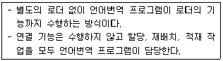
18. 어떤 기호적 이름에 상수 값을 할당하는 어셈블리어 명령은?
19. 0과 1의 2진수로만 되어 있으며, 컴퓨터가 바로 이해하고 수행할 수 있는 가장 기초적인 언어를 의미하는 것은?
20. 작성된 표현식이 BNF의 정의에 의해 바르게 작성되었는지를 확인하기 위해 만들어진 Tree의 명칭은?
2과목: 전자계산기구조
21. 다음은 ADD(덧셈) 연산을 위한 마이크로 오퍼레이션이다. 2)항에 적합한 마이크로 오퍼레이션은?
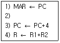
22. 다음 중 연산에서 overflow가 발생되지 않는 것은? (단, 음수는 2의 보수로 표현된 것임)
23. 비수치 데이터에서 마스크를 이용하여 불필요한 부분을 제거하기 위한 연산은?
24. 사이클 스틸과 인터럽트의 차이를 옳게 설명한 것은?
25. 다음 메모리 구조에 대한 설명 중 가장 옳은 것은?
26. 마이크로프로세서의 연산단위를 결정하는 기준에 포함되지 않는 것은?
27. 가상기억장치에서 새 페이지와 주기억장치내의 페이지를 바꾸는 것은?
28. 우선순위에 의한 중재방식 중 중재동작이 끝날 때마다 모든 마스터들의 우선순위가 한 단계씩 낮아지고 가장 우선순위가 낮았던 마스터가 최상위 우선순위를 가지는 방식은?
29. 버퍼 메모리의 목적에 해당되지 않는 것은?
30. 병렬처리기의 종류에 대한 설명으로 틀린 것은?
31. 그림에서 듀티 사이클(duty cycle)은 몇 [%] 인가?
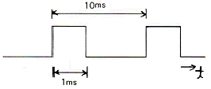
32. 어떤 프로그램이 수행 중 인터럽트 요인이 발생했을 때 CPU가 확인할 사항에 속하지 않는 것은?
33. CPU에 의해서 입출력이 일어나지 않고 별도의 입출력 제어기에 의해서 일어나는 입출력은?
34. 다음 중 처리되는 곳이 다른 하나는?
35. 캐시 메모리의 매핑방법 중 같은 인덱스를 가졌으나 다른 tag를 가진 두 개 이상의 워드가 반복하여 접근된다면 히트율이 상당히 떨어질 수 있는 것은?
36. 그레이 코드(Gray Code)에 대한 설명으로 틀린 것은?
37. 다중처리기 상호 연결 방법 중 하나의 프로세서에 하나의 버스가 할당되어 버스를 이용하려는 프로세서간 경쟁이 적은 것은?
38. 연산 결과를 항상 누산기(Accumulator)에 저장하는 명령어 형식은?
39. 컴퓨터에서 10진 데이터를 연산처리 할 때의 데이터 형식은?
40. 다음은 ISZ 명령어(increment and skip if zero)를 수행하기 위해 필요한 마이크로 연산이다. ( )에 들어갈 문자를 옳게 표시한 것은?
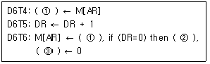
3과목: 마이크로전자계산기
41. 포팅을 통해 리눅스 프로그램/유틸리티를 MS 윈도에서 사용할 수 있도록 하는 프로그램은?
42. 메모리 중 리플레시(refresh) 사이클이 사용되는 것은?
43. 각 데이터(data)의 끝 부분에 특별한 체크(checker) 바이트(byte)가 있어 에러(error)를 찾아내는 방법은?
44. 코루틴(Coroutine)에 관한 설명으로 틀린 것은?
45. 다음 기억소자 중 기억된 내용을 여러 번 지워서 사용할 수 있는 것은?
46. 마이크로컴퓨터용 소프트웨어 개발 과정으로 옳은 것은?
47. 다음 신호 중 양방향 신호는?
48. 스택에 관한 설명으로 틀린 것은?
49. 인출 사이클(fetch cycle)에서 active low로 되지 않는 신호는? (단, Z80 기준)
50. 마이크로컴퓨터의 ROM이 4096비트이면 단어의 길이가 8비트인 경우 몇 워드인가?
51. 연산기(ALU)가 공통적으로 갖는 기능이 아닌 것은?
52. 마이크로컴퓨터의 기억장치에 대한 평가요소로 적절하지 않은 것은?
53. 256×2램(RAM)으로 주소 (1000)16 ~ (17FF)16 사이의 기억장치를 구성하려면, 필요한 램의 개수는? (단, 기억장치 한 번지는 8비트로 되어 있다.)
54. 고정배선제어에 비해 마이크로프로그램을 이용한 제어 방식이 가지는 장점이 아닌 것은?
55. 순서도는 일반적으로 표시되는 정보에 따라 종류를 구분하게 되는데 다음 중 순서도에 해당되지 않는 것은?
56. 마이크로컴퓨터에서 자주 이용되는 표준화된 bus들이다. 이 중 성격이 다른 것은?
57. 매크로 레벨 구조의 정의가 아닌 것은?
58. 직렬 데이터 전송방식에 해당하지 않는 것은?
59. 실제 하드웨어 시스템이 만들어지기 전에 미리 실행해 보아 완성된 시스템에서 디버깅을 보다 용이하게 할 수 있는 기능을 가진 장치는?
60. Z80 CPU의 하드웨어적인 인터럽트 요구 및 처리방법에 해당하는 것은?
4과목: 논리회로
61. 조합논리 회로가 아닌 것은?
62. 다음 플립플롭에서 D 값이 기억되기 위한 클록 조건은?
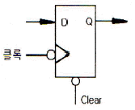
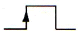
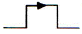
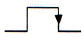
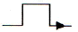
63. 패리티비트 코드의 설명으로 옳지 않은 것은?
64. 다음은 even hamming code로 표시된 BCD 정보 중 1bit error가 발생된 값이 아래와 같을 때 이를 옳게 수정한 값은?
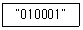
65. 다음과 같은 2-state를 갖는 회로에서 출력 논리값은?
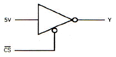
66. CMOS 회로의 특징이 아닌 것은?
67. 컴퓨터의 키보드(keyboard)를 누르면 어떤 회로를 거쳐서 코드화 되는가?
68. 다음은 무안정 멀티바이브레이터에서 C=0.47[μF], RA=RB=1[kΩ]일 때 발생되는 펄스의 듀티사이클 D는?
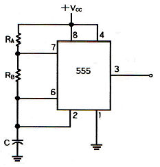
69. 다음 회로에서 입력이 A=1, B=1, Ci=1로 될 경우 출력 X와 Y의 값은?
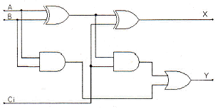
70. 입력 펄스의 수를 세는 회로는?
71. 다음 중 나머지 셋과 다른 논리 값을 갖는 것은?
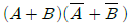
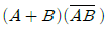
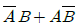
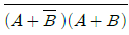
72. I/O port 또는 기억장치 등을 enable시키기 위하여 사용되는 장치는?
73. 병렬 가산기를 구성하는 방식 중 look-ahead 방식이 있는데 이것과 가장 관련이 깊은 것은?
74. 다음 레지스터 형태 중 한 순간에 단지 1비트의 데이터가 들어가고, 모든 데이터 비트가 한번에 출력되는 형태는?
75. 다음 논리회로의 출력 Y와 같은 게이트는?
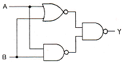
76. minterm으로 표시된 다음 boolean function을 간략화 한 것은? (단, d 함수는 don't care 임)
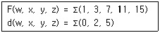
77. 2진수 10110101을 그레이 코드(gray code)로 변환하면?
78. 다음 논리회로에 대한 진리값 중 틀린 것은?
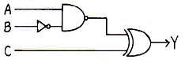
79. RS 플립플롭으로 T 플립플롭을 구현했을 때 옳은 것은?
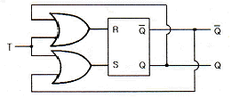
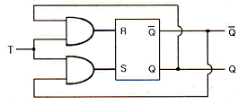
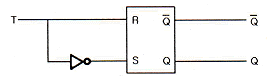
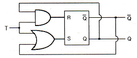
80. 다음 표와 같이 동작하는 MN 플립플롭이 있다고 가정할 경우, 현재상태 출력 Q=1일 때 다음상태 출력 Q+1=1이기 위한 M과 N의 입력으로 가장 적당한 것은? (단, x는 don't care)
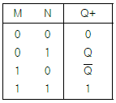
5과목: 데이터통신
81. 다음이 설명하고 있는 것은?
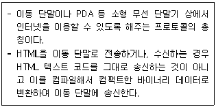
82. 다음은 OSI(Open System Interconnection) 7계층 중 어떤 계층에 대한 설명인가?
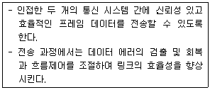
83. 문자 동기 전송방식에서 데이터 투명성(data Transparent)을 위해 삽입되는 제어문자는?
84. 에러 제어에 사용되는 자동반복 요청(ARQ) 기법이 아닌 것은?
85. 효율적인 전송을 위하여 넓은 대역폭(혹은 고속 전송 속도)을 가진 하나의 전송링크를 통하여 여러 신호(혹은 데이터)를 동시에 실어 보내는 기술은?
86. 다음 중 통신망의 체계적인 운용 및 관리를 위한 TMN(Telecommunication Management Network)의 기능 요소에 해당하지 않는 것은?
87. 데이터 통신에서 오류를 검출하는 기법으로 틀린 것은?
88. 최초의 라디오 패킷(radio packet) 통신방식을 적용한 컴퓨터 네트워크 시스템은?
89. LAN의 매체 접근 제어 방식인 CSMA/CD에 대한 설명으로 틀린 것은?
90. 다음이 설명하고 있는 데이터 링크 제어 프로토콜은?
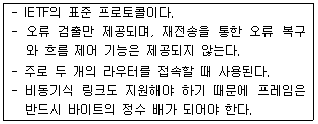
91. 호스트의 물리 주소를 통하여 논리 주소인 IP 주소를 얻어오기 위해 사용되는 프로토콜은?
92. HDLC(High-level Data Link Control)의 정보 프레임에 대한 용도 및 기능으로 가장 적합한 것은?
93. 경로 지정 방식에서 각 노드에 도착하는 패킷을 자신을 제외한 다른 모든 것을 복사하여 전송하는 방식은?
94. 다음 ( ) 안에 들어갈 알맞은 용어는?
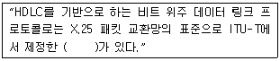
95. 데이터 전송에 있어 데이터 그램 패킷 교환 방식으로 적합한 것은?
96. 핸드오프(Hand-off) 시에 사용할 채널을 먼저 확보하여 연결한 후, 현재 사용 중인 채널의 연결을 끊는 방식은?
97. 전송 매체상의 전송 프레임마다 해당 채널의 시간 슬롯이 고정적으로 할당되는 다중화 방식은?
98. 동기식 시분할 다중화(Synchronous TDM)의 설명으로 틀린 것은?
99. TCP 프로토콜을 사용하는 응용 계층의 서비스가 아닌 것은?
100. 디지털 변조에서 디지털 데이터를 아날로그 신호로 변환시키는 것을 키잉(Keying)이라고 하며, 키잉은 기본적으로 3가지 방식이 있다. 이에 해당하지 않는 것은?